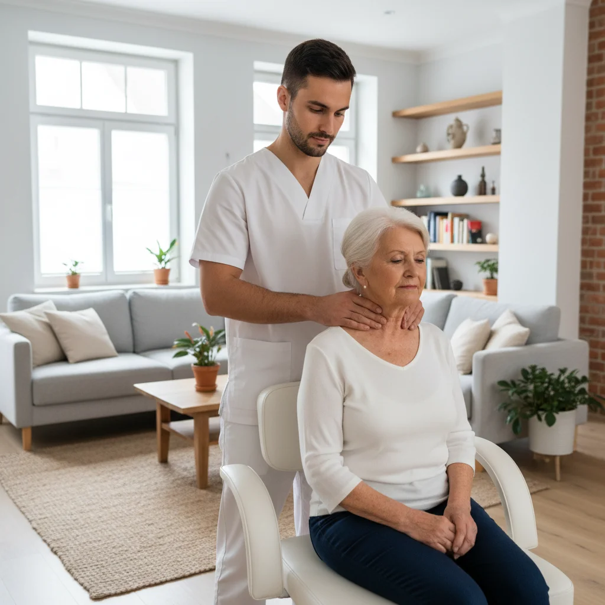

Wordt u 's ochtends wakker met een stijve, pijnlijke rug die pas na een half uur of langer losser wordt? En voelt u zich beter wanneer u beweegt dan wanneer u rust? Dan kan het om de ziekte van Bechterew gaan, ook spondylitis ankylosans of axiale spondyloartritis genoemd. Medicatie remt de ontsteking, maar dagelijkse beweging en kinesitherapie zijn minstens even belangrijk om uw rug soepel, uw houding recht en uw ademhaling ruim te houden. In dit artikel leest u wat Bechterew met uw rug doet, welke oefeningen u thuis kunt doen en hoe een kinesitherapeut u daarbij begeleidt.
Kort samengevat
Bij Bechterew is bewegen een deel van de behandeling. Elke dag oefenen voor beweeglijkheid, houding, ademhaling en conditie helpt om stijfheid te beperken en een voorovergebogen houding te voorkomen. Een kinesitherapeut stelt een programma op maat op, meet uw vooruitgang en past de oefeningen aan wanneer de ziekte opflakkert.
Wat is de Ziekte van Bechterew?
De ziekte van Bechterew is een chronische ontstekingsziekte die vooral de gewrichten tussen het bekken en de onderrug (de SI-gewrichten) en de wervelkolom aantast. De klachten beginnen meestal op jonge leeftijd, vaak voor de 40 jaar. Door de ontsteking kan het lichaam op termijn extra botweefsel aanmaken tussen de wervels. Daardoor kan de rug stijver worden en bij een minderheid van de patiënten zelfs gedeeltelijk vergroeien.
Typische signalen van deze zogenaamde ontstekingsrugpijn zijn:
- Ochtendstijfheid die langer dan 30 minuten duurt
- Pijn die verbetert door te bewegen en verergert door rust
- Nachtelijke rugpijn, vaak in de tweede helft van de nacht
- Afwisselende pijn in de billen, nu eens links, dan weer rechts
- Soms ook pijn in de borstkas, de hiel of andere gewrichten, en vermoeidheid
Herkent u zich hierin? Bespreek het dan met uw huisarts, die u kan doorverwijzen naar een reumatoloog. Gewone, mechanische rugpijn gedraagt zich anders: die wordt meestal erger door belasting en beter door rust. Meer daarover leest u in ons artikel over rugpijn behandelen aan huis. Ook pijn rond het bekken kan andere oorzaken hebben, zoals beschreven in ons artikel over SI-gewricht pijn.
Waarom Bewegen zo Belangrijk is bij Bechterew
Bij veel rugklachten is rust even nodig. Bij Bechterew werkt het omgekeerd: stilzitten maakt de stijfheid erger. Regelmatige beweging heeft meerdere voordelen:
- Het behoudt de beweeglijkheid van uw nek, rug en heupen
- Het helpt u een rechte houding te bewaren en voorkomt dat u geleidelijk voorover gaat hangen
- Het houdt uw borstkas soepel, zodat u diep kunt blijven ademen
- Het vermindert pijn en vermoeidheid en verbetert uw slaap
- Het versterkt de rug- en buikspieren die uw wervelkolom ondersteunen
Internationale richtlijnen raden aan om oefentherapie te combineren met de medicatie die de reumatoloog voorschrijft. Oefenen onder begeleiding van een kinesitherapeut blijkt daarbij doeltreffender dan alleen thuis oefenen zonder opvolging. De ideale combinatie is dus: een programma op maat, regelmatige controle en elke dag zelf aan de slag.

De Vier Pijlers van uw Oefenprogramma
Een goed oefenprogramma bij Bechterew bestaat uit vier onderdelen. U hoeft ze niet allemaal op hetzelfde moment te doen; spreid ze gerust over de dag.
elke ochtend
dagelijks
per oefenmoment
per week
Oefeningen voor Thuis
Onderstaande oefeningen worden vaak gebruikt bij Bechterew. Voer ze rustig uit, zonder te forceren, en adem tijdens elke beweging door. Een licht trekkend gevoel is normaal; scherpe pijn niet. Laat uw programma bij voorkeur eerst nakijken door een kinesitherapeut.
| Oefening | Uitvoering | Doel |
|---|---|---|
| Kat en koe | Op handen en knieën: maak uw rug rond als een kat, daarna hol met de blik vooruit. 10 keer. | Beweeglijkheid van de hele wervelkolom |
| Kin intrekken | Rechtop zittend of met de rug tegen de muur: trek uw kin recht naar achteren, alsof u een dubbele kin maakt. 5 seconden, 10 keer. | Houding van de nek |
| Draaien in zit | Zit rechtop op een stoel, armen gekruist voor de borst. Draai uw bovenlichaam rustig naar links en rechts. 10 keer per kant. | Draaibeweging van de borstwervels |
| Muurtest | Sta met hielen, billen, schouders en achterhoofd tegen de muur. Houd 30 seconden aan, 3 keer. | Rechte houding en bewustwording |
| Buiklig | Lig op uw buik op bed of op de grond, eventueel met een klein kussen onder de borst. Bouw op tot 15–20 minuten per dag. | Strekking van heupen en rug |
| Brug | Op de rug, knieën gebogen: til uw bekken op tot uw lichaam een rechte lijn vormt. 3 seconden, 10 keer. | Kracht van bil- en rugspieren |
| Ademen met armen omhoog | Adem diep in terwijl u uw armen boven het hoofd brengt, adem rustig uit terwijl ze zakken. 5 keer. | Beweeglijkheid van de borstkas |
Bij een opstoot
Tijdens een periode met meer ontsteking en pijn stopt u best niet volledig met bewegen. Kies dan voor zachte mobilisatie en ademhalingsoefeningen en laat krachtoefeningen even rusten. Een warme douche of een warmtekussen vooraf maakt de oefeningen vaak aangenamer. Houden de klachten aan, neem dan contact op met uw reumatoloog.
Ademhaling en Borstkas Soepel Houden
Bechterew kan ook de gewrichten tussen de ribben en de wervels aantasten. Daardoor zet de borstkas minder uit bij het inademen en voelt ademen soms beperkt of pijnlijk aan. Gerichte ademhalingsoefeningen helpen om dat te voorkomen:
- Diep buik- en flankademen: leg uw handen op uw onderste ribben en adem zo in dat u ze voelt uitzetten
- Strekken en ademen combineren, zoals bij de oefening met de armen omhoog
- Niet roken: roken versnelt de ziekte en belast de longen extra
Ook duursport zoals wandelen, zwemmen of fietsen houdt uw longen en hart in vorm. Fietsen kan prima thuis op een hometrainer; let er wel op dat u het stuur hoog zet, zodat u rechtop zit en niet krom over het stuur hangt.
Tips voor het Dagelijks Leven
- Plan uw oefeningen 's ochtends, wanneer de stijfheid het grootst is, bijvoorbeeld na een warme douche
- Sta elk halfuur even op als u lang zit, bijvoorbeeld bij thuiswerk
- Slaap op een stevige matras met een dun hoofdkussen, zodat uw nek niet voorover geduwd wordt
- Zet uw scherm op ooghoogte en kies een stoel met goede rugsteun
- Blijf in beweging op uw eigen niveau: regelmaat is belangrijker dan intensiteit
Kinesitherapie aan Huis bij Bechterew
Bij een opstoot kan zelfs de verplaatsing naar een praktijk een opgave zijn. Met kinesitherapie aan huis komt de kinesitherapeut van PhysioVisit naar u toe in de regio Grimbergen, Strombeek-Bever, Humbeek, Beigem en Koningslo. Tijdens de behandeling:
- meten we uw beweeglijkheid, zoals de afstand tussen achterhoofd en muur en het uitzetten van de borstkas, zodat u uw vooruitgang ziet
- stellen we een oefenprogramma op maat op dat past bij uw dagritme en de ruimte die u thuis heeft
- begeleiden we u bij opstoten met zachte mobilisatie en ademhalingsoefeningen
- geven we advies over houding aan uw bureau, in de zetel en in bed
Zo leert u welke oefeningen voor u werken, en houdt u ze ook vol wanneer de therapeut er niet is. Meer over onze aanpak leest u op de pagina over orthopedische revalidatie. Heeft u naast uw rug ook last van uw nek? Lees dan ons artikel over nekpijn en cervicale kinesitherapie aan huis.
Veelgestelde Vragen over Bechterew en Kinesitherapie
Begeleiding bij Bechterew aan Huis?
Onze kinesitherapeut komt bij u thuis in de regio Grimbergen en helpt u met een oefenprogramma op maat voor een soepele rug en een rechte houding.
Conclusie
De ziekte van Bechterew is chronisch, maar u heeft zelf veel invloed op hoe soepel uw rug blijft. Elke dag bewegen, met aandacht voor beweeglijkheid, houding, ademhaling en conditie, is een volwaardig deel van de behandeling naast de medicatie van uw reumatoloog. Met begeleiding van een kinesitherapeut leert u de juiste oefeningen, ziet u uw vooruitgang en weet u hoe u omgaat met opstoten.
Wilt u starten met een programma op maat, bij u thuis? Neem contact met ons op voor een afspraak. Lees ook ons artikel over wervelkanaalstenose en oefeningen thuis.